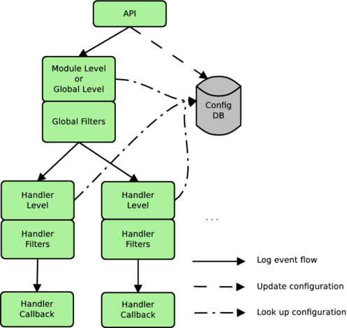

Logging
Erlang/OTP 21.0 provides a standard API for logging through Logger , which is part of the Kernel application. Logger consists of the API for issuing log events, and a customizable backend where log handlers, filters and formatters can be plugged in.
By default, the Kernel application installs one log handler at system start. This handler is named default . It receives and processes standard log events produced by the Erlang runtime system, standard behaviours and different Erlang/OTP applications. The log events are by default written to the terminal.
You can also configure the system so that the default handler prints log events to a single file, or to a set of wrap logs via disk_log .
By configuration, you can also modify or disable the default handler, replace it by a custom handler, and install additional handlers.
Note
Since Logger is new in Erlang/OTP 21.0, we do reserve the right to introduce changes to the Logger API and functionality in patches following this release. These changes might or might not be backwards compatible with the initial version.
Overview
A log event consists of a log level , the message to be logged, and metadata .
The Logger backend forwards log events from the API, first through a set of primary filters , then through a set of secondary filters attached to each log handler. The secondary filters are in the following named handler filters .
Each filter set consists of a log level check , followed by zero or more filter functions .
The following figure shows a conceptual overview of Logger. The figure shows two log handlers, but any number of handlers can be installed. 
Log levels are expressed as atoms. Internally in Logger, the atoms are mapped to integer values, and a log event passes the log level check if the integer value of its log level is less than or equal to the currently configured log level. That is, the check passes if the event is equally or more severe than the configured level. See section Log Level for a listing and description of all log levels.
The primary log level can be overridden by a log level configured per module. This is to, for instance, allow more verbose logging from a specific part of the system.
Filter functions can be used for more sophisticated filtering than the log level check provides. A filter function can stop or pass a log event, based on any of the event's contents. It can also modify all parts of the log event. See see section Filters for more details.
If a log event passes through all primary filters and all handler filters for a specific handler, Logger forwards the event to the handler callback . The handler formats and prints the event to its destination. See section Handlers for more details.
Everything up to and including the call to the handler callbacks is executed on the client process, that is, the process where the log event was issued. It is up to the handler implementation if other processes are involved or not.
The handlers are called in sequence, and the order is not defined. logger_api
Logger API
The API for logging consists of a set of macros , and a set of functions on the form logger:Level/1,2,3 , which are all shortcuts for logger#log-2 .
The macros are defined in logger.hrl , which is included in a module with the directive
-include_lib("kernel/include/logger.hrl").
The difference between using the macros and the exported functions is that macros add location (originator) information to the metadata, and performs lazy evaluation by wrapping the logger call in a case statement, so it is only evaluated if the log level of the event passes the primary log level check. log_level
Log Level
The log level indicates the severity of a event. In accordance with the Syslog protocol, RFC 5424 , eight log levels can be specified. The following table lists all possible log levels by name (atom), integer value, and description: TODO: TABLE
Notice that the integer value is only used internally in Logger. In the API, you must always use the atom. To compare the severity of two log levels, use logger#compare_levels-2 . log_message
Log Message
The log message contains the information to be logged. The message can consist of a format string and arguments (given as two separate parameters in the Logger API), a string or a report. The latter, which is either a map or a key-value list, can be accompanied by a report callback specified in the log event's metadata . The report callback is a convenience function that the formatter can use to convert the report to a format string and arguments, or directly to a string. The formatter can also use its own conversion function, if no callback is provided, or if a customized formatting is desired.
The report callback must be a fun with one or two arguments. If it takes one argument, this is the report itself, and the fun returns a format string and arguments:
fun(( logger#type-report ) -> { stdlib/io#type-format ,[term()]})
If it takes two arguments, the first is the report, and the second is a map containing extra data that allows direct coversion to a string:
fun(( logger#type-report , logger#type-report_cb_config ) ->
stdlib/unicode#type-chardata )
The fun must obey the depth and chars_limit parameters provided in the second argument, as the formatter cannot do anything useful of these parameters with the returned string. The extra data also contains a field named single_line , indicating if the printed log message may contain line breaks or not. This variant is used when the formatting of the report depends on the size or single line parameters.
Example, format string and arguments:
logger:error("The file does not exist: ~ts",[Filename])
Example, string:
logger:notice("Something strange happened!")
Example, report, and metadata with report callback:
logger:debug(#{got => connection_request, id => Id, state => State},
#{report_cb => fun(R) -> {"~p",[R]} end})
The log message can also be provided through a fun for lazy evaluation. The fun is only evaluated if the primary log level check passes, and is therefore recommended if it is expensive to generate the message. The lazy fun must return a string, a report, or a tuple with format string and arguments.
Metadata
Metadata contains additional data associated with a log message. Logger inserts some metadata fields by default, and the client can add custom metadata in two different ways:
<dt> Set process metadata </dt>
<dd>
Process metadata is set and updated with
logger#set_process_metadata-1
and
logger#update_process_metadata-1
, respectively. This metadata applies to the process on which these calls are made, and Logger adds the metadata to all log events issued on that process.
</dd>
<dt> Add metadata to a specific log event </dt>
<dd>
Metadata associated with one specific log event is given as the last parameter to the log macro or Logger API function when the event is issued. For example:
```
?LOG_ERROR("Connection closed",#{context => server})
```
</dd>
See the description of the logger#type-metadata type for information about which default keys Logger inserts, and how the different metadata maps are merged. filter
Filters
Filters can be primary, or attached to a specific handler. Logger calls the primary filters first, and if they all pass, it calls the handler filters for each handler. Logger calls the handler callback only if all filters attached to the handler in question also pass.
A filter is defined as:
{FilterFun, Extra}
where FilterFun is a function of arity 2, and Extra is any term. When applying the filter, Logger calls the function with the log event as the first argument, and the value of Extra as the second argument. See logger#type-filter for type definitions.
The filter function can return stop , ignore or the (possibly modified) log event.
If stop is returned, the log event is immediately discarded. If the filter is primary, no handler filters or callbacks are called. If it is a handler filter, the corresponding handler callback is not called, but the log event is forwarded to filters attached to the next handler, if any.
If the log event is returned, the next filter function is called with the returned value as the first argument. That is, if a filter function modifies the log event, the next filter function receives the modified event. The value returned from the last filter function is the value that the handler callback receives.
If the filter function returns ignore , it means that it did not recognize the log event, and thus leaves to other filters to decide the event's destiny.
The configuration option filter_default specifies the behaviour if all filter functions return ignore , or if no filters exist. filter_default is by default set to log , meaning that if all existing filters ignore a log event, Logger forwards the event to the handler callback. If filter_default is set to stop , Logger discards such events.
Primary filters are added with logger#add_primary_filter-2 and removed with logger#remove_primary_filter-1 . They can also be added at system start via the Kernel configuration parameter logger_parameter .
Handler filters are added with logger#add_handler_filter-3 and removed with logger#remove_handler_filter-2 . They can also be specified directly in the configuration when adding a handler with logger#add_handler/3 or via the Kernel configuration parameter logger_parameter .
To see which filters are currently installed in the system, use logger#get_config-0 , or logger#get_primary_config-0 and logger#get_handler_config-1 . Filters are listed in the order they are applied, that is, the first filter in the list is applied first, and so on.
For convenience, the following built-in filters exist:
<dt> logger_filters#domain-2 </dt>
<dd>
Provides a way of filtering log events based on a
domain
field in
Metadata
.
</dd>
<dt> logger_filters#level-2 </dt>
<dd>
Provides a way of filtering log events based on the log level.
</dd>
<dt> logger_filters#progress-2 </dt>
<dd>
Stops or allows progress reports from
supervisor
and
application_controller
.
</dd>
<dt> logger_filters#remote_gl-2 </dt>
<dd>
Stops or allows log events originating from a process that has its group leader on a remote node.
</dd>
Handlers
A handler is defined as a module exporting at least the following callback function:
log(LogEvent, Config) -> void()
This function is called when a log event has passed through all primary filters, and all handler filters attached to the handler in question. The function call is executed on the client process, and it is up to the handler implementation if other processes are involved or not.
Logger allows adding multiple instances of a handler callback. That is, if a callback module implementation allows it, you can add multiple handler instances using the same callback module. The different instances are identified by unique handler identities.
In addition to the mandatory callback function log/2 , a handler module can export the optional callback functions adding_handler/1 , changing_config/3 , filter_config/1 , and removing_handler/1 . See section Handler Callback Functions in the logger(3) manual page for more information about these function.
The following built-in handlers exist:
<dt> logger_std_h </dt>
<dd>
This is the default handler used by OTP. Multiple instances can be started, and each instance will write log events to a given destination, terminal or file.
</dd>
<dt> logger_disk_log_h </dt>
<dd>
This handler behaves much like
logger_std_h
, except it uses
disk_log
as its destination.
</dd>
<dt> ErrorLoggerManager error_logger </dt>
<dd>
This handler is provided for backwards compatibility only. It is not started by default, but will be automatically started the first time an
error_logger
event handler is added with
error_logger#add_report_handler-1
.
The old
error_logger
event handlers in STDLIB and SASL still exist, but they are not added by Erlang/OTP 21.0 or later.
</dd>
Formatters
A formatter can be used by the handler implementation to do the final formatting of a log event, before printing to the handler's destination. The handler callback receives the formatter information as part of the handler configuration, which is passed as the second argument to logger#HModule:log-2 .
The formatter information consist of a formatter module, FModule and its configuration, FConfig . FModule must export the following function, which can be called by the handler:
format(LogEvent,FConfig) -> FormattedLogEntry
The formatter information for a handler is set as a part of its configuration when the handler is added. It can also be changed during runtime with logger#set_handler_config-3 , which overwrites the current formatter information, or with logger#update_formatter_config-2 , which only modifies the formatter configuration.
If the formatter module exports the optional callback function logger#FModule:check_config-1 , Logger calls this function when the formatter information is set or modified, to verify the validity of the formatter configuration.
If no formatter information is specified for a handler, Logger uses logger_formatter as default. See the logger_formatter manual page for more information about this module.
Configuration
At system start, Logger is configured through Kernel configuration parameters. The parameters that apply to Logger are described in section Kernel Configuration Parameters . Examples are found in section Configuration Examples .
During runtime, Logger configuration is changed via API functions. See section Configuration API Functions in the logger(3) manual page.
Primary Logger Configuration
Logger API functions that apply to the primary Logger configuration are: * logger#get_primary_config-0 * logger#set_primary_config-1 * logger#update_primary_config-1 * logger#add_primary_filter-2 * logger#remove_primary_filter-1
The primary Logger configuration is a map with the following keys:
<dt> primary_level level = logger#type-level | all | none </dt>
<dd>
Specifies the primary log level, that is, log event that are equally or more severe than this level, are forwarded to the primary filters. Less severe log events are immediately discarded.
See section
Log Level
for a listing and description of possible log levels.
The initial value of this option is set by the Kernel configuration parameter
logger_level
. It is changed during runtime with
logger#set_primary_config-2
.
Defaults to notice .
</dd>
<dt> filters = [{FilterId,Filter}] </dt>
<dd>
Specifies the primary filters.
* FilterId = logger#type-filter_id
* Filter = logger#type-filter
The initial value of this option is set by the Kernel configuration parameter
logger_parameter
. During runtime, primary filters are added and removed with
logger#add_primary_filter-2
and
logger#remove_primary_filter-1
, respectively.
See section Filters for more detailed information.
Defaults to [] .
</dd>
<dt> filter_default = log | stop </dt>
<dd>
Specifies what happens to a log event if all filters return
ignore
, or if no filters exist.
See section
Filters
for more information about how this option is used.
Defaults to log .
</dd>
Handler Configuration
Logger API functions that apply to handler configuration are: * logger#get_handler_config-0 * logger#set_handler_config-2 * logger#update_handler_config-2 * logger#add_handler_filter-3 * logger#remove_handler_filter-2 * logger#update_formatter_config-2
The configuration for a handler is a map with the following keys:
<dt> id = logger#type-handler_id </dt>
<dd>
Automatically inserted by Logger. The value is the same as the
HandlerId
specified when adding the handler, and it cannot be changed.
</dd>
<dt> module = module() </dt>
<dd>
Automatically inserted by Logger. The value is the same as the
Module
specified when adding the handler, and it cannot be changed.
</dd>
<dt> level = logger#type-level | all | none </dt>
<dd>
Specifies the log level for the handler, that is, log events that are equally or more severe than this level, are forwarded to the handler filters for this handler.
See section
Log Level
for a listing and description of possible log levels.
The log level is specified when adding the handler, or changed during runtime with, for instance,
logger#set_handler_config/3
.
Defaults to all .
</dd>
<dt> filters = [{FilterId,Filter}] </dt>
<dd>
Specifies the handler filters.
* FilterId = logger#type-filter_id
* Filter = logger#type-filter
Handler filters are specified when adding the handler, or added or removed during runtime with
logger#add_handler_filter-3
and
logger#remove_handler_filter-2
, respectively.
See Filters for more detailed information.
Defaults to [] .
</dd>
<dt> filter_default = log | stop </dt>
<dd>
Specifies what happens to a log event if all filters return
ignore
, or if no filters exist.
See section
Filters
for more information about how this option is used.
Defaults to log .
</dd>
<dt> formatter = {FormatterModule,FormatterConfig} </dt>
<dd>
Specifies a formatter that the handler can use for converting the log event term to a printable string.
* FormatterModule = module()
* FormatterConfig = logger#type-formatter_config
The formatter information is specified when adding the handler. The formatter configuration can be changed during runtime with
logger#update_formatter_config-2
, or the complete formatter information can be overwritten with, for instance,
logger#set_handler_config-3
.
See section Formatters for more detailed information.
Defaults to
{logger_formatter,DefaultFormatterConfig}
. See the
logger_formatter
manual page for information about this formatter and its default configuration.
</dd>
<dt> config = term() </dt>
<dd>
Handler specific configuration, that is, configuration data related to a specific handler implementation.
The configuration for the built-in handlers is described in the
logger_std_h
and
logger_disk_log_h
manual pages.
</dd>
Notice that level and filters are obeyed by Logger itself before forwarding the log events to each handler, while formatter and all handler specific options are left to the handler implementation. kernel_config_params
Kernel Configuration Parameters
The following Kernel configuration parameters apply to Logger:
<dt> logger_parameter logger = [Config] </dt>
<dd>
Specifies the configuration for
Logger
, except the primary log level, which is specified with
logger_level
, and the compatibility with
SASL Error Logging
, which is specified with
logger_sasl_compatible
.
With this parameter, you can modify or disable the default handler, add custom handlers and primary logger filters, set log levels per module, and modify the
proxy
configuration.
Config is any (zero or more) of the following:
<dl>
<dt> {handler, default, undefined} </dt>
<dd>
Disables the default handler. This allows another application to add its own default handler.
Only one entry of this type is allowed.
</dd>
<dt> {handler, HandlerId, Module, HandlerConfig} </dt>
<dd>
If
HandlerId
is
default
, then this entry modifies the default handler, equivalent to calling
```
logger:remove_handler(default)
```
followed by
```
logger:add_handler(default, Module, HandlerConfig)
```
For all other values of
HandlerId
, this entry adds a new handler, equivalent to calling
```
logger:add_handler(HandlerId, Module, HandlerConfig)
```
Multiple entries of this type are allowed.
</dd>
<dt> {filters, FilterDefault, [Filter]} </dt>
<dd>
Adds the specified primary filters.
* FilterDefault = log | stop
* Filter = {FilterId, {FilterFun, FilterConfig}}
Equivalent to calling
```
logger:add_primary_filter(FilterId, {FilterFun, FilterConfig})
```
for each Filter .
FilterDefault
specifies the behaviour if all primary filters return
ignore
, see section
Filters
.
Only one entry of this type is allowed.
</dd>
<dt> {module_level, Level, [Module]} </dt>
<dd>
Sets module log level for the given modules. Equivalent to calling
```
logger:set_module_level(Module, Level)
```
for each Module .
Multiple entries of this type are allowed.
</dd>
<dt> {proxy, ProxyConfig} </dt>
<dd>
Sets the proxy configuration, equivalent to calling
```
logger:set_proxy_config(ProxyConfig)
```
Only one entry of this type is allowed.
</dd>
</dl>
See section
Configuration Examples
for examples using the
logger
parameter for system configuration.
</dd>
<dt> logger_level logger_level = Level </dt>
<dd>
Specifies the primary log level. See the
kernel_app#logger_level
manual page for more information about this parameter.
</dd>
<dt> logger_sasl_compatible logger_sasl_compatible = true | false
</dt>
<dd>
Specifies Logger's compatibility with
SASL Error Logging
. See the
kernel_app#logger_sasl_compatible
manual page for more information about this parameter.
</dd>
Configuration Examples
The value of the Kernel configuration parameter logger is a list of tuples. It is possible to write the term on the command line when starting an erlang node, but as the term grows, a better approach is to use the system configuration file. See the config manual page for more information about this file.
Each of the following examples shows a simple system configuration file that configures Logger according to the description.
Modify the default handler to print to a file instead of standard_io :
[{kernel,
[{logger,
[{handler, default, logger_std_h, % {handler, HandlerId, Module,
#{config => #{file => "log/erlang.log"}}} % Config}
]}]}].
Modify the default handler to print each log event as a single line:
[{kernel,
[{logger,
[{handler, default, logger_std_h,
#{formatter => {logger_formatter, #{single_line => true}}}}
]}]}].
Modify the default handler to print the pid of the logging process for each log event:
[{kernel,
[{logger,
[{handler, default, logger_std_h,
#{formatter => {logger_formatter,
#{template => [time," ",pid," ",msg,"\n"]}}}}
]}]}].
Modify the default handler to only print errors and more severe log events to "log/erlang.log", and add another handler to print all log events to "log/debug.log".
[{kernel,
[{logger,
[{handler, default, logger_std_h,
#{level => error,
config => #{file => "log/erlang.log"}}},
{handler, info, logger_std_h,
#{level => debug,
config => #{file => "log/debug.log"}}}
]}]}].
Backwards Compatibility with error_logger
Logger provides backwards compatibility with error_logger in the following ways:
<dt> API for Logging </dt>
<dd>
The
error_logger
API still exists, but should only be used by legacy code. It will be removed in a later release.
Calls to
error_logger#error_report-1
,
error_logger#error_msg-1
, and corresponding functions for warning and info messages, are all forwarded to Logger as calls to
logger#log-3
.
Level = error | warning | info
and is taken from the function name.
Report
contains the actual log message, and
Metadata
contains additional information which can be used for creating backwards compatible events for legacy
error_logger
event handlers, see section
Legacy Event Handlers
.
</dd>
<dt> Output Format </dt>
<dd>
To get log events on the same format as produced by
error_logger_tty_h
and
error_logger_file_h
, use the default formatter,
logger_formatter
, with configuration parameter
legacy_header
set to
true
. This is the default configuration of the
default
handler started by Kernel.
</dd>
<dt> Default Format of Log Events from OTP </dt>
<dd>
By default, all log events originating from within OTP, except the former so called "SASL reports", look the same as before.
</dd>
<dt> sasl_reports SASL Reports </dt>
<dd>
By SASL reports we mean supervisor reports, crash reports and progress reports.
Prior to Erlang/OTP 21.0, these reports were only logged when the SASL application was running, and they were printed trough SASL's own event handlers
sasl_report_tty_h
and
sasl_report_file_h
.
The destination of these log events was configured by
SASL configuration parameters
.
Due to the specific event handlers, the output format slightly differed from other log events.
As of Erlang/OTP 21.0, the concept of SASL reports is removed, meaning that the default behaviour is as follows:
*
Supervisor reports, crash reports, and progress reports are no longer connected to the SASL application.
*
Supervisor reports and crash reports are issued as
error
level log events, and are logged through the default handler started by Kernel.
*
Progress reports are issued as
info
level log events, and since the default primary log level is
notice
, these are not logged by default. To enable printing of progress reports, set the
primary log level
to
info
.
* The output format is the same for all log events.
If the old behaviour is preferred, the Kernel configuration parameter
kernel_app#logger_sasl_compatible
can be set to
true
. The
SASL configuration parameters
can then be used as before, and the SASL reports will only be printed if the SASL application is running, through a second log handler named
sasl
.
All SASL reports have a metadata field
domain
which is set to
[otp,sasl]
. This field can be used by filters to stop or allow the log events.
See section
SASL User's Guide
for more information about the old SASL error logging functionality.
</dd>
<dt> legacy_event_handlers Legacy Event Handlers </dt>
<dd>
To use event handlers written for
error_logger
, just add your event handler with
```
error_logger:add_report_handler/1,2.
```
This automatically starts the error logger event manager, and adds
error_logger
as a handler to Logger, with the following configuration:
```
{level => info,
filter_default => log, filters => []}.
```
This handler ignores events that do not originate from the
error_logger
API, or from within OTP. This means that if your code uses the Logger API for logging, then your log events will be discarded by this handler.
The handler is not overload protected.
</dd>
Error Handling
Logger does, to a certain extent, check its input data before forwarding a log event to filters and handlers. It does, however, not evaluate report callbacks, or check the validity of format strings and arguments. This means that all filters and handlers must be careful when formatting the data of a log event, making sure that it does not crash due to bad input data or faulty callbacks.
If a filter or handler still crashes, Logger will remove the filter or handler in question from the configuration, and print a short error message to the terminal. A debug event containing the crash reason and other details is also issued.
See section Log Message for more information about report callbacks and valid forms of log messages.
Example: Add a handler to log info events to file
When starting an Erlang node, the default behaviour is that all log events on level notice or more severe, are logged to the terminal via the default handler. To also log info events, you can either change the primary log level to info :
1> logger:set_primary_config(level, info).
ok
or set the level for one or a few modules only:
2> logger:set_module_level(mymodule, info).
ok
This allows info events to pass through to the default handler, and be printed to the terminal as well. If there are many info events, it can be useful to print these to a file instead.
First, set the log level of the default handler to notice , preventing it from printing info events to the terminal:
3> logger:set_handler_config(default, level, notice).
ok
Then, add a new handler which prints to file. You can use the handler module logger_std_h , and configure it to log to file:
4>
Config = #{config => #{file => "./info.log"}, level => info}.
#{config => #{file => "./info.log"},level => info}
5>
logger:add_handler(myhandler, logger_std_h, Config).
ok
Since filter_default defaults to log , this handler now receives all log events. If you want info events only in the file, you must add a filter to stop all non-info events. The built-in filter logger_filters#level-2 can do this:
6>
logger:add_handler_filter(myhandler, stop_non_info, {fun logger_filters:level/2, {stop, neq, info}}).
ok
See section Filters for more information about the filters and the filter_default configuration parameter.
Example: Implement a handler
Section Handler Callback Functions in the logger(3) manual page describes the callback functions that can be implemented for a Logger handler.
A handler callback module must export: * log(Log, Config)
It can optionally also export some, or all, of the following: * adding_handler(Config) * removing_handler(Config) * changing_config(SetOrUpdate, OldConfig, NewConfig) * filter_config(Config)
When a handler is added, by for example a call to logger#add_handler-3 , Logger first calls HModule:adding_handler(Config) . If this function returns {ok,Config1} , Logger writes Config1 to the configuration database, and the logger:add_handler/3 call returns. After this, the handler is installed and must be ready to receive log events as calls to HModule:log/2 .
A handler can be removed by calling logger#remove_handler-1 . Logger calls HModule:removing_handler(Config) , and removes the handler's configuration from the configuration database.
When logger#set_handler_config-2 or logger#update_handler_config/2 is called, Logger calls HModule:changing_config(SetOrUpdate, OldConfig, NewConfig) . If this function returns {ok,NewConfig1} , Logger writes NewConfig1 to the configuration database.
When logger#get_config-0 or logger#get_handler_config-0 is called, Logger calls HModule:filter_config(Config) . This function must return the handler configuration where internal data is removed.
A simple handler that prints to the terminal can be implemented as follows:
-module(myhandler1).
-export([log/2]).
log(LogEvent, #{formatter := {FModule, FConfig}}) ->
io:put_chars(FModule:format(LogEvent, FConfig)).
Notice that the above handler does not have any overload protection, and all log events are printed directly from the client process.
For information and examples of overload protection, please refer to section Protecting the Handler from Overload , and the implementation of logger_std_h and logger_disk_log_h .
The following is a simpler example of a handler which logs to a file through one single process:
-module(myhandler2).
-export([adding_handler/1, removing_handler/1, log/2]).
-export([init/1, handle_call/3, handle_cast/2, terminate/2]).
adding_handler(Config) ->
MyConfig = maps:get(config,Config,#{file => "myhandler2.log"}),
{ok, Pid} = gen_server:start(?MODULE, MyConfig, []),
{ok, Config#{config => MyConfig#{pid => Pid}}}.
removing_handler(#{config := #{pid := Pid}}) ->
gen_server:stop(Pid).
log(LogEvent,#{config := #{pid := Pid}} = Config) ->
gen_server:cast(Pid, {log, LogEvent, Config}).
init(#{file := File}) ->
{ok, Fd} = file:open(File, [append, {encoding, utf8}]),
{ok, #{file => File, fd => Fd}}.
handle_call(_, _, State) ->
{reply, {error, bad_request}, State}.
handle_cast({log, LogEvent, Config}, #{fd := Fd} = State) ->
do_log(Fd, LogEvent, Config),
{noreply, State}.
terminate(_Reason, #{fd := Fd}) ->
_ = file:close(Fd),
ok.
do_log(Fd, LogEvent, #{formatter := {FModule, FConfig}}) ->
String = FModule:format(LogEvent, FConfig),
io:put_chars(Fd, String).
Protecting the Handler from Overload
The default handlers, logger_std_h and logger_disk_log_h , feature an overload protection mechanism, which makes it possible for the handlers to survive, and stay responsive, during periods of high load (when huge numbers of incoming log requests must be handled). The mechanism works as follows:
Message Queue Length
The handler process keeps track of the length of its message queue and takes some form of action when the current length exceeds a configurable threshold. The purpose is to keep the handler in, or to as quickly as possible get the handler into, a state where it can keep up with the pace of incoming log events. The memory use of the handler must never grow larger and larger, since that will eventually cause the handler to crash. These three thresholds, with associated actions, exist:
<dt> sync_mode_qlen </dt>
<dd>
As long as the length of the message queue is lower than this value, all log events are handled asynchronously. This means that the client process sending the log event, by calling a log function in the
Logger API
, does not wait for a response from the handler but continues executing immediately after the event is sent. It is not affected by the time it takes the handler to print the event to the log device. If the message queue grows larger than this value, the handler starts handling log events synchronously instead, meaning that the client process sending the event must wait for a response. When the handler reduces the message queue to a level below the
sync_mode_qlen
threshold, asynchronous operation is resumed. The switch from asynchronous to synchronous mode can slow down the logging tempo of one, or a few, busy senders, but cannot protect the handler sufficiently in a situation of many busy concurrent senders.
Defaults to 10 messages.
</dd>
<dt> drop_mode_qlen </dt>
<dd>
When the message queue grows larger than this threshold, the handler switches to a mode in which it drops all new events that senders want to log. Dropping an event in this mode means that the call to the log function never results in a message being sent to the handler, but the function returns without taking any action. The handler keeps logging the events that are already in its message queue, and when the length of the message queue is reduced to a level below the threshold, synchronous or asynchronous mode is resumed. Notice that when the handler activates or deactivates drop mode, information about it is printed in the log.
Defaults to 200 messages.
</dd>
<dt> flush_qlen </dt>
<dd>
If the length of the message queue grows larger than this threshold, a flush (delete) operation takes place. To flush events, the handler discards the messages in the message queue by receiving them in a loop without logging. Client processes waiting for a response from a synchronous log request receive a reply from the handler indicating that the request is dropped. The handler process increases its priority during the flush loop to make sure that no new events are received during the operation. Notice that after the flush operation is performed, the handler prints information in the log about how many events have been deleted.
Defaults to 1000 messages.
</dd>
For the overload protection algorithm to work properly, it is required that:
sync_mode_qlen =< drop_mode_qlen =< flush_qlen
and that:
drop_mode_qlen > 1
To disable certain modes, do the following: * If sync_mode_qlen is set to 0 , all log events are handled synchronously. That is, asynchronous logging is disabled. * If sync_mode_qlen is set to the same value as drop_mode_qlen , synchronous mode is disabled. That is, the handler always runs in asynchronous mode, unless dropping or flushing is invoked. * If drop_mode_qlen is set to the same value as flush_qlen , drop mode is disabled and can never occur.
During high load scenarios, the length of the handler message queue rarely grows in a linear and predictable way. Instead, whenever the handler process is scheduled in, it can have an almost arbitrary number of messages waiting in the message queue. It is for this reason that the overload protection mechanism is focused on acting quickly, and quite drastically, such as immediately dropping or flushing messages, when a large queue length is detected.
The values of the previously listed thresholds can be specified by the user. This way, a handler can be configured to, for example, not drop or flush messages unless the message queue length of the handler process grows extremely large. Notice that large amounts of memory can be required for the node under such circumstances. Another example of user configuration is when, for performance reasons, the client processes must never be blocked by synchronous log requests. It is possible, perhaps, that dropping or flushing events is still acceptable, since it does not affect the performance of the client processes sending the log events.
A configuration example:
logger:add_handler(my_standard_h, logger_std_h,
#{config => #{file => "./system_info.log",
sync_mode_qlen => 100,
drop_mode_qlen => 1000,
flush_qlen => 2000}}).
Controlling Bursts of Log Requests
Large bursts of log events - many events received by the handler under a short period of time - can potentially cause problems, such as: * Log files grow very large, very quickly. * Circular logs wrap too quickly so that important data is overwritten. * Write buffers grow large, which slows down file sync operations.
For this reason, both built-in handlers offer the possibility to specify the maximum number of events to be handled within a certain time frame. With this burst control feature enabled, the handler can avoid choking the log with massive amounts of printouts. The configuration parameters are:
<dt> burst_limit_enable </dt>
<dd>
Value true enables burst control and false disables it.
Defaults to true .
</dd>
<dt> burst_limit_max_count </dt>
<dd>
This is the maximum number of events to handle within a
burst_limit_window_time
time frame. After the limit is reached, successive events are dropped until the end of the time frame.
Defaults to 500 events.
</dd>
<dt> burst_limit_window_time </dt>
<dd>
See the previous description of burst_limit_max_count .
Defaults to 1000 milliseconds.
</dd>
A configuration example:
logger:add_handler(my_disk_log_h, logger_disk_log_h,
#{config => #{file => "./my_disk_log",
burst_limit_enable => true,
burst_limit_max_count => 20,
burst_limit_window_time => 500}}).
Terminating an Overloaded Handler
It is possible that a handler, even if it can successfully manage peaks of high load without crashing, can build up a large message queue, or use a large amount of memory. The overload protection mechanism includes an automatic termination and restart feature for the purpose of guaranteeing that a handler does not grow out of bounds. The feature is configured with the following parameters:
<dt> overload_kill_enable </dt>
<dd>
Value true enables the feature and false disables it.
Defaults to false .
</dd>
<dt> overload_kill_qlen </dt>
<dd>
This is the maximum allowed queue length. If the message queue grows larger than this, the handler process is terminated.
Defaults to 20000 messages.
</dd>
<dt> overload_kill_mem_size </dt>
<dd>
This is the maximum memory size that the handler process is allowed to use. If the handler grows larger than this, the process is terminated.
Defaults to 3000000 bytes.
</dd>
<dt> overload_kill_restart_after </dt>
<dd>
If the handler is terminated, it restarts automatically after a delay specified in milliseconds. The value
infinity
prevents restarts.
Defaults to 5000 milliseconds.
</dd>
If the handler process is terminated because of overload, it prints information about it in the log. It also prints information about when a restart has taken place, and the handler is back in action.
Note
The sizes of the log events affect the memory needs of the handler. For information about how to limit the size of log events, see the logger_formatter manual page.
Logger Proxy
The Logger proxy is an Erlang process which is part of the Kernel application's supervision tree. During startup, the proxy process registers itself as the system_logger , meaning that log events produced by the emulator are sent to this process.
When a log event is issued on a process which has its group leader on a remote node, Logger automatically forwards the log event to the group leader's node. To achieve this, it first sends the log event as an Erlang message from the original client process to the proxy on the local node, and the proxy in turn forwards the event to the proxy on the remote node.
When receiving a log event, either from the emulator or from a remote node, the proxy calls the Logger API to log the event.
The proxy process is overload protected in the same way as described in section Protecting the Handler from Overload , but with the following default values:
#{sync_mode_qlen => 500,
drop_mode_qlen => 1000,
flush_qlen => 5000,
burst_limit_enable => false,
overload_kill_enable => false}
For log events from the emulator, synchronous message passing mode is not applicable, since all messages are passed asynchronously by the emulator. Drop mode is achieved by setting the system_logger to undefined , forcing the emulator to drop events until it is set back to the proxy pid again.
The proxy uses erts/erlang#send_nosuspend/2 when sending log events to a remote node. If the message could not be sent without suspending the sender, it is dropped. This is to avoid blocking the proxy process.
See Also
disk_log , erts/erlang , error_logger , logger , logger_disk_log_h , logger_filters , logger_formatter , logger_std_h , sasl/sasl_app